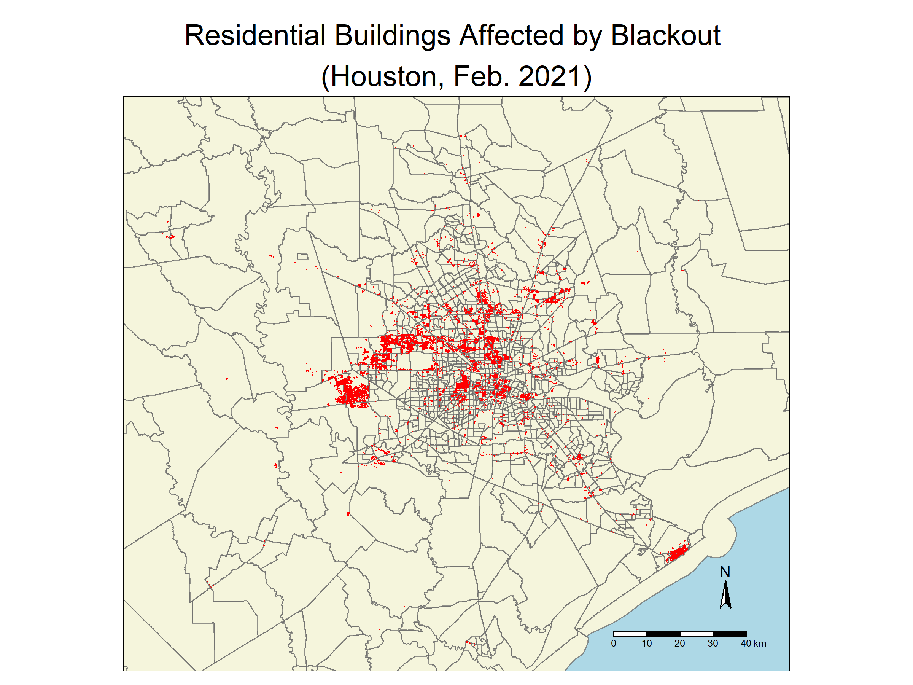

Code
# Load packages
library(sf)
library(stars)
library(tmap)
library(here)
library(tidyverse)
library(kableExtra)
library(testthat)
library(spData)
library(spDataLarge)
library(geodata)
library(raster)
library(viridisLite)Identifying the Impacts of Severe Winter Storms in Houston, TX
# Load packages
library(sf)
library(stars)
library(tmap)
library(here)
library(tidyverse)
library(kableExtra)
library(testthat)
library(spData)
library(spDataLarge)
library(geodata)
library(raster)
library(viridisLite)# Read in Houston road data
# Exclude data that doesn't include highways
roads <- read_sf(here("data", "data","gis_osm_roads_free_1.gpkg"), query = "SELECT * FROM gis_osm_roads_free_1 WHERE fclass='motorway'", quiet = TRUE)
# Read in Houston house data
# Exclude non-residential buildings
houses <- read_sf(here("data", "data", "gis_osm_buildings_a_free_1.gpkg"), query = "SELECT *
FROM gis_osm_buildings_a_free_1
WHERE (type IS NULL AND name IS NULL)
OR type in ('residential', 'apartments', 'house', 'static_caravan', 'detached')", quiet = TRUE)
# Read in Texas census data
tx_census <- st_read(here("data","data", "ACS_2019_5YR_TRACT_48_TEXAS.gdb"), layer = "ACS_2019_5YR_TRACT_48_TEXAS", quiet = TRUE)
# Read in Texas census tract and income data
tx_income <- st_read(here("data","data", "ACS_2019_5YR_TRACT_48_TEXAS.gdb"), layer = "X19_INCOME", quiet = TRUE)
# Read in nightlight data
# Data for 2021-02-07
nightlight_07_05 <- read_stars(here("data", "data","VNP46A1", "VNP46A1.A2021038.h08v05.001.2021039064328.tif"))
nightlight_07_06 <- read_stars(here("data", "data", "VNP46A1", "VNP46A1.A2021038.h08v06.001.2021039064329.tif"))
# Data for 2021-02-16
nightlight_16_05 <- read_stars(here("data", "data", "VNP46A1", "VNP46A1.A2021047.h08v05.001.2021048091106.tif"))
nightlight_16_06 <- read_stars(here("data", "data", "VNP46A1", "VNP46A1.A2021047.h08v06.001.2021048091105.tif"))# Make a warning message to ensure CRS is the same across all geo-data frames
check_df_crs <- function() {
df_crs_comparisons <- list( # Create a named list with comparisons
"roads vs houses" = st_crs(roads) == st_crs(houses),
"roads vs tx_census" = st_crs(roads) == st_crs(tx_census),
"houses vs tx_census" = st_crs(houses) == st_crs(tx_census),
"nightlight_07_05 vs nightlight_07_06" = st_crs(nightlight_07_05) == st_crs(nightlight_07_06),
"nightlight_07_05 vs nightlight_16_05" = st_crs(nightlight_07_05) == st_crs(nightlight_16_05),
"nightlight_07_05 vs nightlight_16_06" = st_crs(nightlight_07_05) == st_crs(nightlight_16_06)
)
# Identify results that are FALSE by comparison name
false_comparisons <- names(df_crs_comparisons)[!unlist(df_crs_comparisons)]
if (length(false_comparisons) == 0) {
print("All CRS match. ")
} else {
warning(paste(paste(false_comparisons, "CRS projections do not match.", collapse = " ")))
}
}
# Call warning function
check_df_crs()# Change the CRS of roads and tx_income to match tx_census and houses
tx_census <- st_transform(tx_census, crs = st_crs(houses))
roads <- st_transform(roads, crs = st_crs(houses))
#tx_income <- st_transform(tx_income, crs = st_crs(houses))
# Call warning function again to ensure transformation worked
check_df_crs()[1] "All CRS match. "# Combine the raster data to show all of Houston for the 7th
lights_07 <- st_mosaic(nightlight_07_05, nightlight_07_06)
# Combine the raster data to show all of Houston for the 16th
lights_16 <- st_mosaic(nightlight_16_05, nightlight_16_06)# Make a map of the light intensity before the storm
plot(lights_07, main = "Light intensity of Houston Feb. 7th, 2021")# Make a map of the light intensity before the storm
plot(lights_16, main = "Light intensity of Houston Feb. 16th, 2021")
# Find the change in light intensity between the two days
lights_diff <- lights_07 - lights_16
# Set all cells with values less than 200 to NA, add labels
blackout <- cut(lights_diff, c(200, Inf), labels = 'blackout')
# Make a mask by vectorizing to make it a spatial feature
blackout_vector <- st_as_sf(blackout) %>%
st_make_valid() # Fix invalid geometries
# Define the spatial parameters of the Houston area
houston_coords <- cbind(x = c(-96.5, -96.5, -94.5, -94.5, -96.5),
y = c(29, 30.5, 30.5, 29, 29))
# Turn these coordinates into a polygon
houston_box <- st_sfc(st_polygon(list(houston_coords)), crs = 4326)
# Make a mask for the Houston area
houston_mask <- st_intersects(blackout_vector, houston_box, sparse = FALSE) # Keep all values
# Use the blackout_vector to select for the Houston area that had blackouts
houston_blackout <- blackout_vector[houston_mask,]
# Change the CRS to match the other Texas data sets
houston_blackout <- st_transform(houston_blackout, crs = 3083)# Match this CRS variable with the roads dataset
roads <- st_transform(roads, crs = st_crs(houston_blackout))
# Test that the units of roads are already in meters
if (st_crs(roads)$units == "m") {
print("Units are in meters.")
} else {
stop("The units are not in meters.")
}[1] "Units are in meters."# Make a buffer of 200m to exclude highways and the surrounding areas
roads_buffer_200 <- st_buffer(roads, dist = 200) %>%
st_union()
# Find the area that had blackouts that are further than 200m from a highway
lights_hwy_buffer <- st_difference(houston_blackout, roads_buffer_200)# Test that the units of roads are already in meters
if (st_crs(houses) == st_crs(lights_hwy_buffer)) {
print("CRS match")
} else {
houses <- st_transform(houses, crs = st_crs(lights_hwy_buffer))
}
# Combine the data frames by intersecting buildings and blackout data
blackout_houses <- houses[lights_hwy_buffer, , op = st_intersects]
# Find the number of residential buildings that suffered a blackout
number_residential_blackout <- nrow(blackout_houses)
print(paste("An estimated", number_residential_blackout, "residential buildings in Houston suffered a blackout during the storms in February, 2021."))[1] "An estimated 157411 residential buildings in Houston suffered a blackout during the storms in February, 2021."# Make a map of the homes in in Houston that lost power
blackout_houses_map <- tm_shape(tx_census, bbox = houston_box)+
tm_polygons(col = "beige",
border.alpha = 0.7)+
tm_shape(blackout_houses) +
tm_polygons(border.col= "red",
col = "red",
lwd = 0.3) +
tm_compass(size = 1.5,
position = c(0.87, 0.11)) +
tm_scale_bar(width = .18,
position = c(0.9, 0.03)) +
tm_layout(main.title = "Residential Buildings Affected by Blackout \n(Houston, Feb. 2021)",
main.title.position = "center",
bg.color = "lightblue")
# Save the map to a larger image
tmap_save(blackout_houses_map, filename = "HW3_files/houston_blackout_map.png", width = 2400, height = 1800)
# Make a data frame that contains median income data and geoID
tx_median_income <- tx_income %>%
dplyr::select(B19013e1, GEOID) %>%
rename(median_income = B19013e1, # Column for median income found in metadata
GEOID_Data = GEOID) # Rename column so there is a common column in tx_census
# Combine the Texas income data to Texas census tract data
tx_income_census <- left_join(tx_census, tx_median_income, by = "GEOID_Data")
# Test that the CRS of tx_income_census matches the CRS of blackout_houses and transform if false
if (st_crs(tx_income_census) == st_crs(blackout_houses)) {
print("CRS match")
} else {
tx_income_census <- st_transform(tx_income_census, crs = st_crs(blackout_houses))
}
# Join the Texas census tract data with residential buildings affected by blackouts
tx_census_blackouts <- st_filter(tx_income_census, blackout_houses) # Test that the CRS of tx_income_census matches the CRS of blackout_houses and transform if false
if (st_crs(houston_box) == st_crs(tx_income_census)) {
print("CRS match")
} else {
houston_box <- st_transform(houston_box, crs = st_crs(tx_income_census))
}
# Crop Texas income data to the Houston area
houston_income_census <- st_crop(tx_income_census, houston_box)
# Filter census tracts that had blackouts from census data
census_blackout <- st_filter(houston_income_census, blackout_houses, .predicate = st_intersects)
# Make centroids to show the census tracts that had blackouts
centroids <- st_centroid(census_blackout) # Make a custom color palette made with colorbrewer
my_palette <- c("#f0f9e8", "#ccebc5", "#a8ddb5", "#7bccc4", "#43a2ca", "#0868ac") # Reverse it so that smaller tracts have more contrast and 'pop'
# Make a map of the census black in Houston that lost power
income_blackout_map <- tm_shape(houston_income_census) +
tm_fill(col = "median_income",
palette = my_palette,
title = "Median Income ($/year)") +
tm_borders(col = "black",
lwd = 0.5)+
tm_shape(centroids) + # Centroids data
tm_dots(col = "red",
size = 0.025) +
tm_scale_bar(position = c(0.73, 0.03),
width = .18) +
tm_compass(size = 1.24,
position = c(0.87, 0.1))+
tm_add_legend(type = "symbol", # Centroids legend
shape = 16,
size = 0.25,
labels = "Census Tracts With Blackouts",
col = "red") +
tm_layout(title.size = 2,
legend.outside = TRUE,
legend.frame = TRUE,
legend.bg.color = "white",
legend.title.size = 1,
legend.width = 1,
frame = TRUE,
main.title = "Census Tract Blackouts by Median Income \n Houston, February 16th, 2021",
main.title.position = "left",
bg.color = "lightblue", # Set background to blue to represent water
inner.margins = c(0, 0, 0, 0)) # Adjust margins for map)
# Save the map to a larger image
tmap_save(income_blackout_map, filename = "HW3_files/income_blackout_map.png", width = 2400, height = 1800)# Filter for tracts that were unaffected by blackouts
unaffected <- houston_income_census[census_blackout, , op = st_disjoint] # Use disjoint to exclude any houses that are on the border
# Plot the unaffected census tracts
ggplot(data = unaffected, aes(x = median_income)) +
geom_histogram(bins = 25, fill = "#FDF5BF", color = "black") +
ylim(0, 190) +
labs(title = "Income of Houses Unaffected by Blackouts",
x = " Median Income ($/year)",
y = "Count of Residential Buildings") +
theme_minimal() +
theme(plot.title = element_text(hjust = 0.5)) # Center the title# Plot the affected census
ggplot(data = census_blackout, aes(x = median_income)) +
geom_histogram(bins = 25, fill = "#3F225C", color = "white") +
ylim(0, 170) +
labs(title = "Income of Houses Affected by Blackouts",
x = " Median Income ($/year)",
y = "Count of Residential Buildings") +
theme_minimal() +
theme(plot.title = element_text(hjust = 0.5)) # Center the titleThis document explored the impact of the severe winter storms of February 2021 on Houston, Texas. Remote sensing data from the 7th and 16th were compared to determine how the storms affected the availability of electricity to different areas and income groups of the city. The difference in light intensities of Houston on these dates were calculated after excluding areas near highways to determine parts of the city that suffered blackouts. The results were then compared to U.S. Census data to determine if different income groups were affected disproportionately.
The results did not show a clear correlation between the areas that were impacted by blackouts and socioeconomic status. The distribution of homes affected by blackouts when compared to median income is similar to the distribution for those that were unaffected. There were limitations to this study, however. There were only two instances of data collection, and one of them was during the third storm, when clouds or snow may have obstructed light. More observations, from before, between, and after the storms would provide a better understanding of the impact.
# Create a table for my citations
citations_df = tibble::tribble(
~Data,
~Accesssed,
~Link,
"NASAs Level-1 and Atmospheric Archive & Distribution System Distributed Active Archive Center (LAADS DAAC)", "Accessed 11/04/24", "[https://ladsweb.modaps.eosdis.nasa.gov/](https://ladsweb.modaps.eosdis.nasa.gov/)",
"OpenStreetMap Data Extracts", "Accessed 11/04/24", "[https://download.geofabrik.de/](https://download.geofabrik.de/)",
" U.S. Census Bureaus American Community Survey", "Accessed 11/04/24",
"[https://www.census.gov/programs-surveys/acs](https://www.census.gov/programs-surveys/acs)"
)
knitr::kable(citations_df,
caption = "Data Citations")| Data | Accesssed | Link |
|---|---|---|
| NASAs Level-1 and Atmospheric Archive & Distribution System Distributed Active Archive Center (LAADS DAAC) | Accessed 11/04/24 | https://ladsweb.modaps.eosdis.nasa.gov/ |
| OpenStreetMap Data Extracts | Accessed 11/04/24 | https://download.geofabrik.de/ |
| U.S. Census Bureaus American Community Survey | Accessed 11/04/24 | https://www.census.gov/programs-surveys/acs |